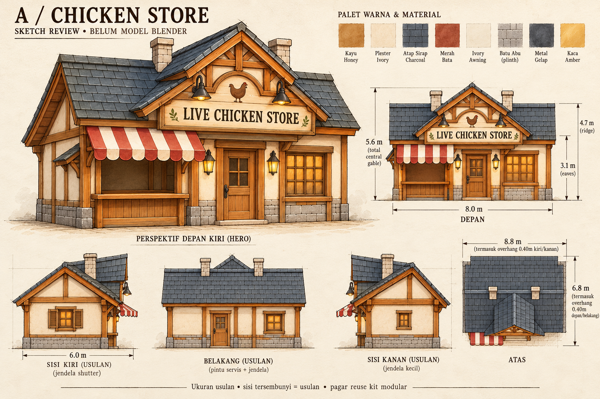
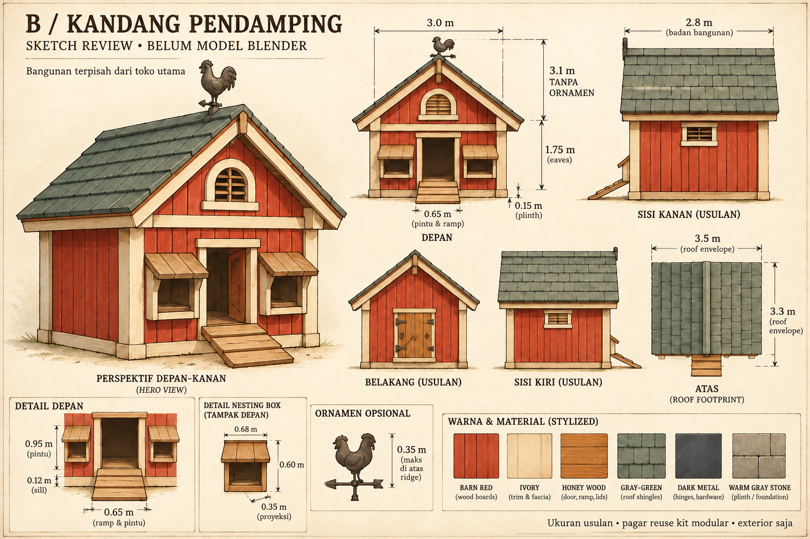
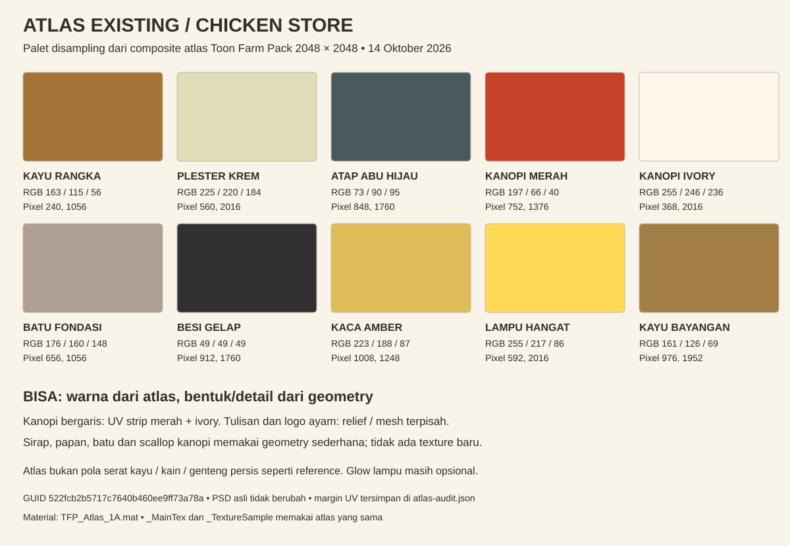
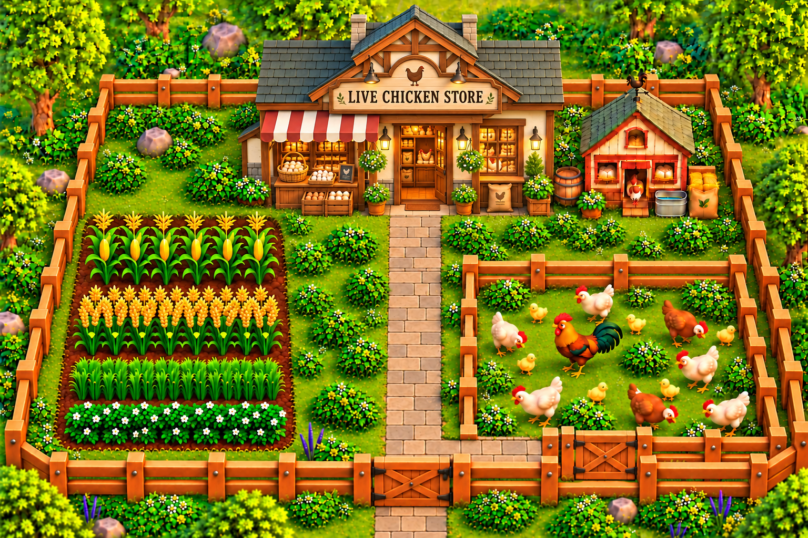

Chicken Store — proposal A
ACC 14 Oktober 2026 · model Blender dan FBX: ArtSource/ChickenStore_A · integrasi Unity tahap berikutnya
Toko utama dan kandang kecil pada reference disiapkan sebagai dua bangunan terpisah. Pagar reuse kit modular yang sudah tersedia. Tanaman, hewan, kebun, jalan dan barang dagangan tidak termasuk modeling exterior ini.
| Bangunan | Tapak badan W × D | Tinggi |
|---|
| A · Chicken Store | 8,00 × 6,00 m | 5,60 m, gable tengah |
| B · Kandang pendamping | 3,00 × 2,80 m | 3,10 m tanpa ornamen; maksimal 3,45 m dengan ornamen |
Semua ukuran dan sisi tersembunyi adalah usulan. PNG generatif merupakan acuan bentuk, bukan gambar kerja berskala. Ukuran produksi mengikuti spesifikasi proposal.
A · Toko utama

Atap utama ridge kiri–kanan, gable tengah bertingkat, dua cerobong, papan nama berlogo ayam, kanopi merah–ivory dan counter kosong. Pintu terpisah ditunjukkan tertutup; interior lengkap belum dibuat.
B · Kandang pendamping

Pelana sederhana, dua kotak sarang kosong, bukaan ayam dan ramp pendek. Ornamen ayam atap opsional, tambahan tinggi maksimum 0,35 m.
Atlas Toonpack: bisa mencakup warna utama

Kanopi bergaris memakai UV strip merah dan ivory. Genteng, papan dan bracing memakai geometry sederhana. Tulisan LIVE CHICKEN STORE dan logo ayam memakai mesh/relief, karena tidak ada sign persis tersebut dalam atlas. Tidak perlu atlas albedo baru. Kaca opaque amber; glow lampu opsional memakai material lights pack setelah verifikasi.
Data pixel, RGB, margin UV, material GUID dan hash sumber: audit atlas. Arsiran/serat pada sketch adalah ilustrasi konsep, bukan texture baru yang akan dibake. Dibuat dengan built-in image_gen; prompt lengkap.
Lihat reference asli
